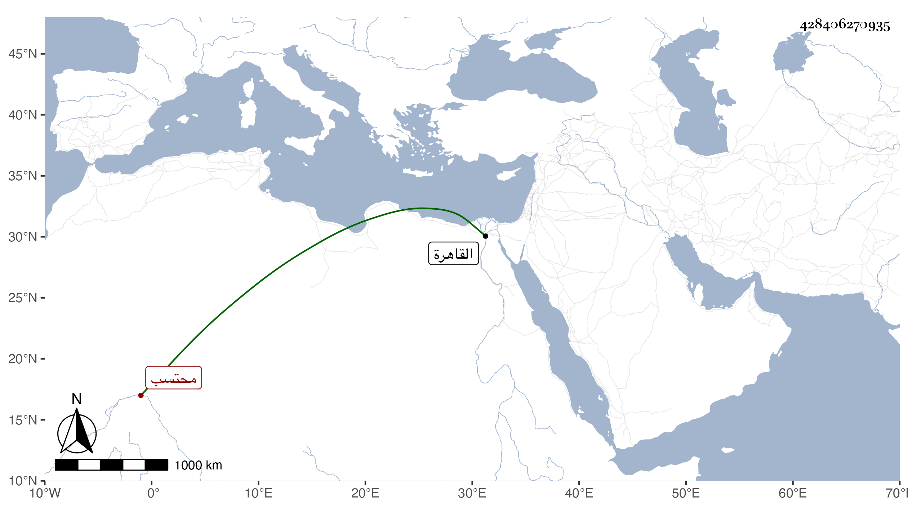

0902Sakhawi.DawLamic.ITO20230111-ara1.EIS1600.428406270935
Biography ID: 428406270935
675
محمد بن شعبان الشمس محتسب القاهرة . ولد تقريبا سنة ثمانين وسبعمائة وكان عريا عن الفضائل بل عاميا محضا ومع ذلك فولي الحسبة زيادة على عشرين مرة بالبذل بحيث كان يتبجح بذلك ويفتخر به مع أن المؤيد ضربه مرة على رجليه وألزمه بعدم السعي فيها وما انفك إلى أن افتقر وصار تعتريه المفاصل ، ثم مات في حادي عشري شوال سنة أربع وأربعين قال المقريزي وكان لا فضل ولا فضيلة .
